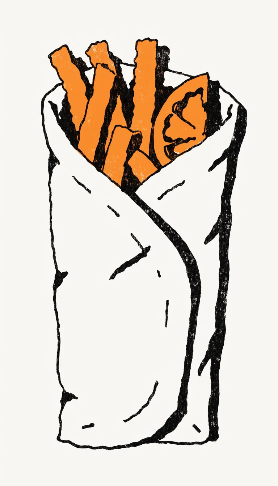
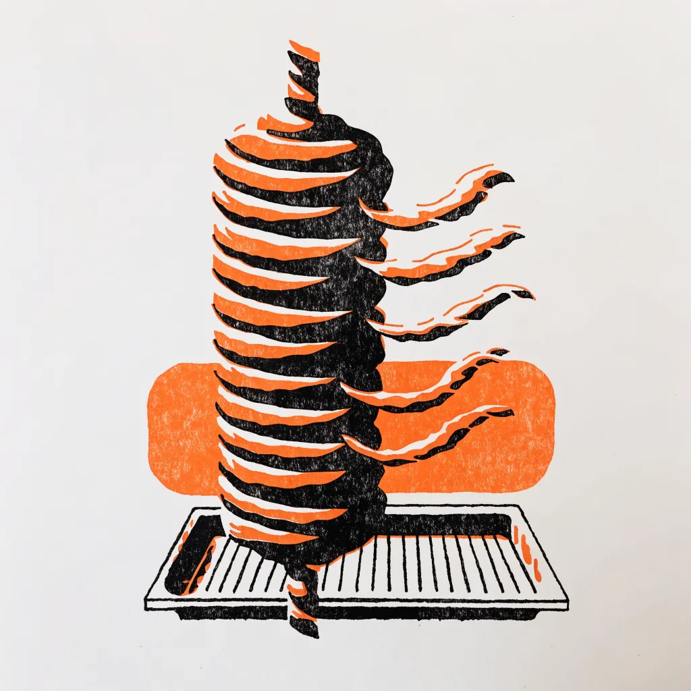
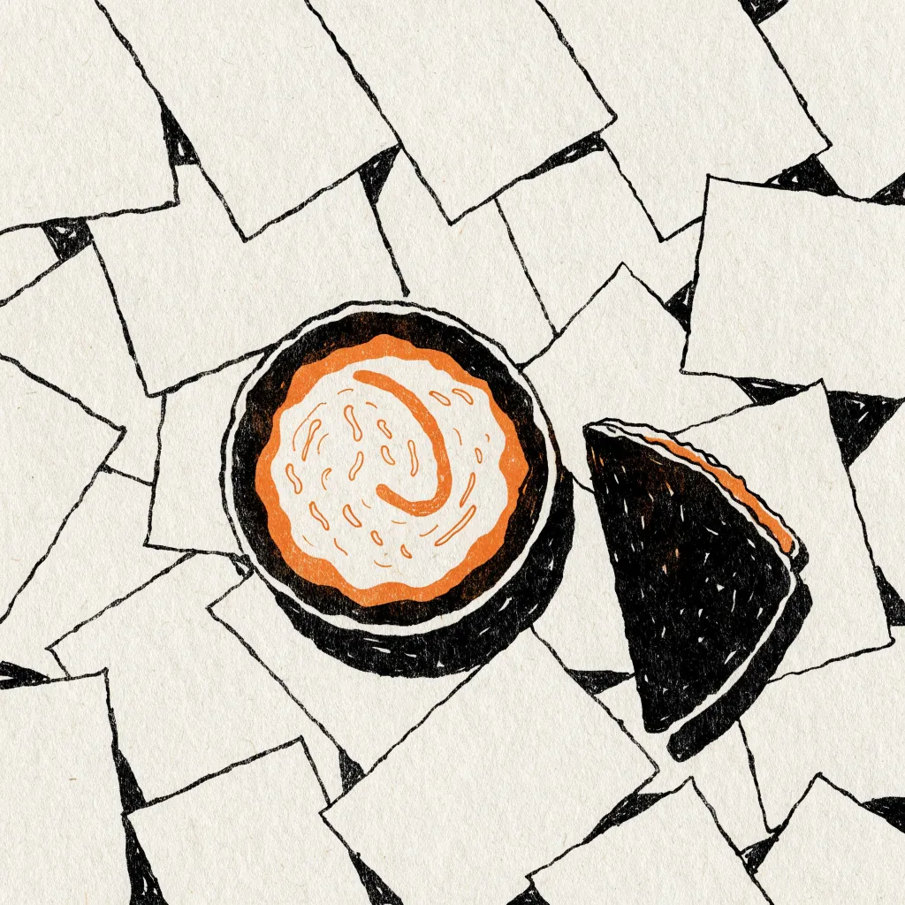
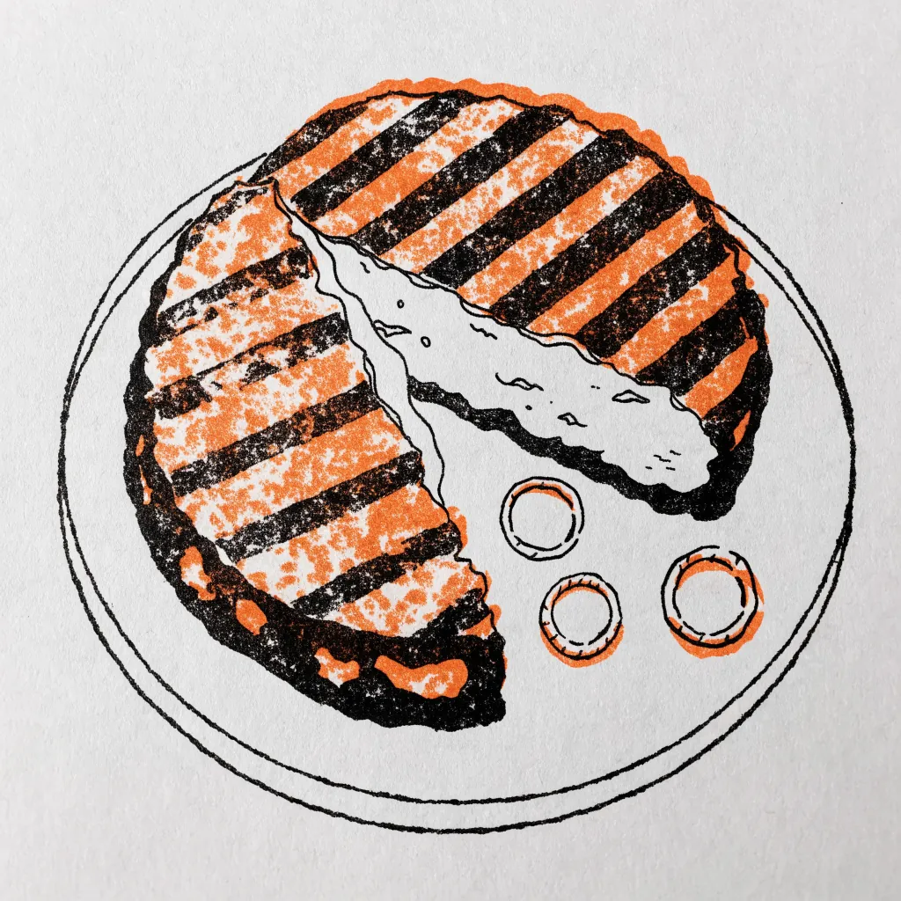

Grillart Street Greek

Ein Leben ohne Pita ist möglich, aber sinnlos.
Steht so auf der Tafel vor der Tür.
Pita in Standard oder Groß. Schwein oder Hähnchen. Vor Ort, zum Mitnehmen oder geliefert.
So läuft’s
Am Tresen bestellen.
Dort hängt auch die ganze Karte.
Abholen, wenn’s fertig ist.
Frisch vom Grill, also kurz warten.
Platz nehmen oder mitnehmen.
Drinnen, draußen oder auf dem Heimweg. Liefern geht auch.
Was über den Tresen geht
Gyros und Hähnchen vom Grill, als Pita oder auf dem Teller. Tzatziki und Pommes gehören dazu.



KI-Bild
KI-Bild
KI-BildWas es gibt
Pita
Standard oder Groß
Schwein oder Hähnchen

KI-Bild- Gyros Pitavom Spieß, im Pitabrot
- Hähnchen-Pitavom Grill, im Pitabrot
- Gyros TellerGyros auf dem Teller statt im Brot
- Biftekimit Schafskäsefüllung
- Tzatzikizur Pita, zum Teller, zum Dippen
- Pommesals Beilage
Die ganze Karte hängt am Tresen. Fragen? Anrufen.
0511 56962279

Drinnen mehr Platz als gedacht
Bestellt wird am Tresen. Sitzen kann man drinnen, und da ist mehr Platz, als die Fassade vermuten lässt. Bei gutem Wetter auch draußen.
Mit mehreren Leuten unterwegs? Tische lassen sich reservieren, einfach anrufen: 0511 56962279.
Mittags wie abends. Nach der Pita gibt’s Kaffee und Desserts, dazu Bier und Wein.

Öffnungszeiten
Montag ist zu. Den Rest der Woche gibt’s Pita von 12 bis 21 Uhr.
- Montag
- geschlossen
- Dienstag
- 12:00 – 21:00
- Mittwoch
- 12:00 – 21:00
- Donnerstag
- 12:00 – 21:00
- Freitag
- 12:00 – 21:00
- Samstag
- 12:00 – 21:00
- Sonntag
- 12:00 – 21:00
Anfahrt
Göttinger Str. 6130449 Hannover
Linden-Limmer, direkt an der Göttinger Straße.
Bestellen, Tisch reservieren, nachfragen:
0511 56962279Dienstag bis Sonntag, 12 bis 21 UhrGöttinger Str. 61, 30449 Hannover